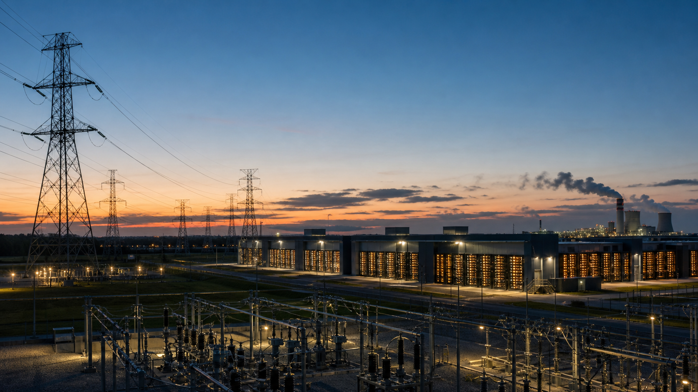
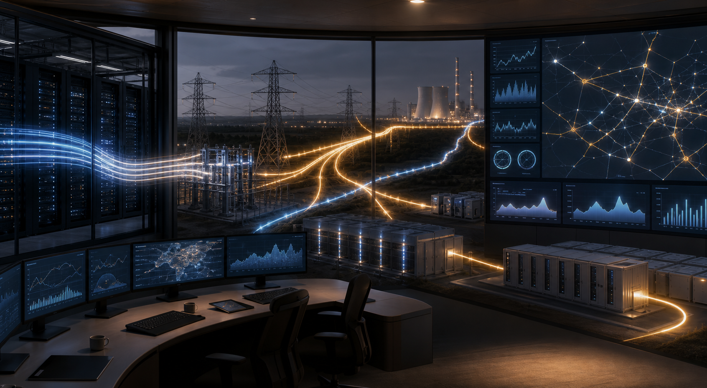
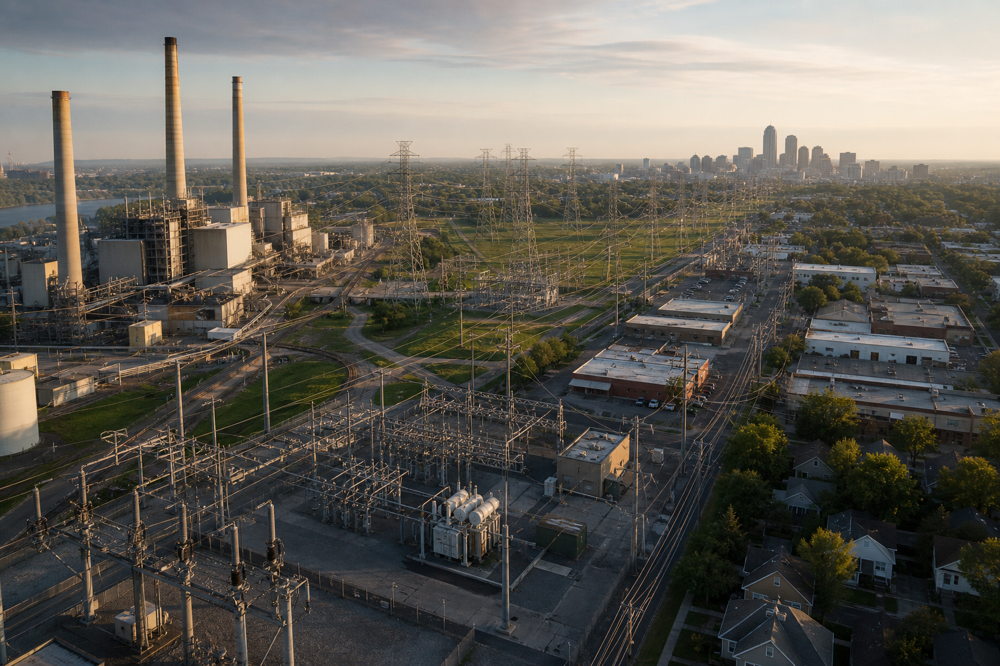
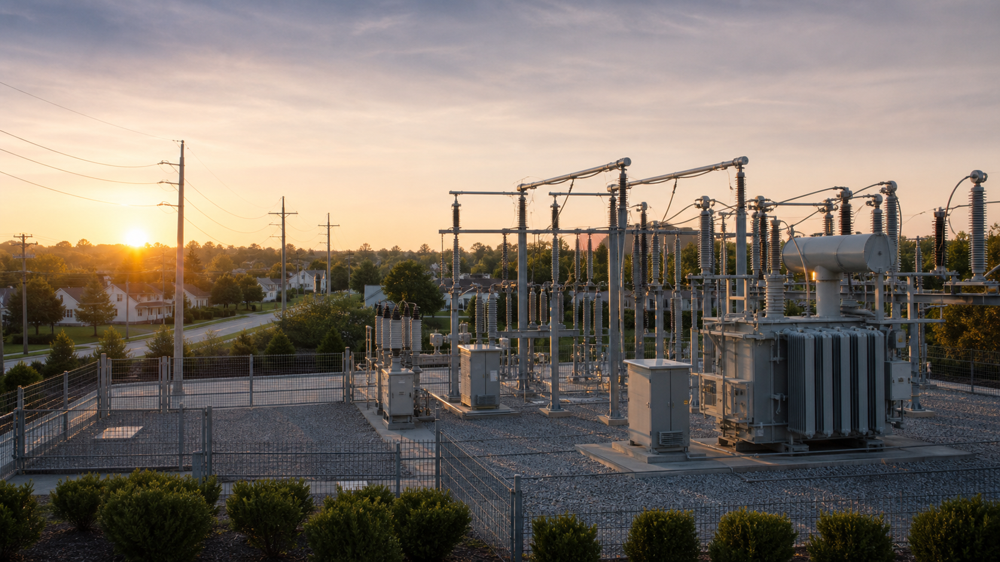
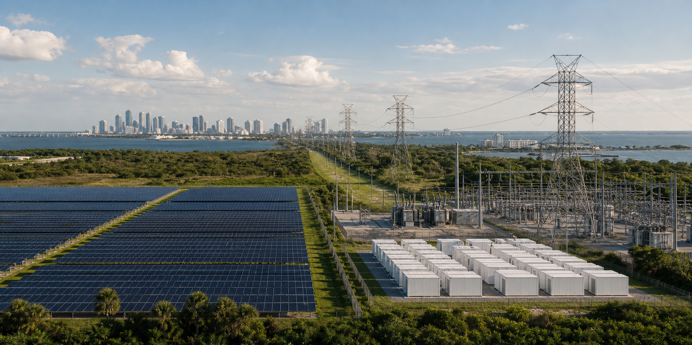
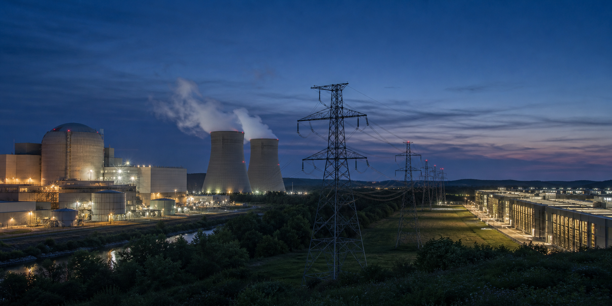
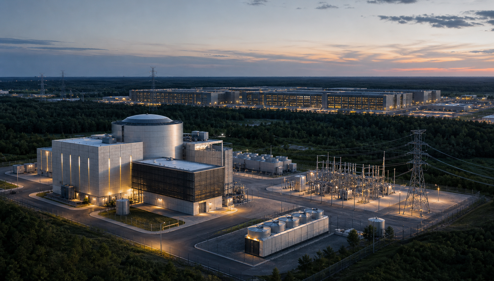
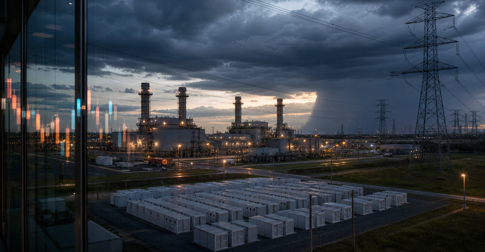
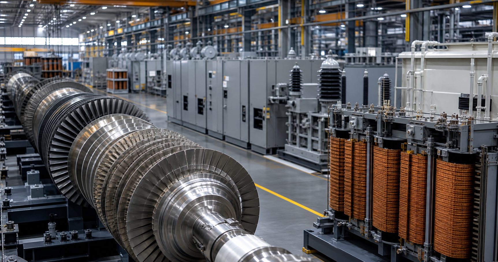

Over the past year, when markets discussed AI, the most common keywords were GPUs, HBM, cloud computing, model training, and data centers. But if we keep asking a more basic question, the logic quickly reaches the power industry: where does the electricity for these AI data centers come from?
This question looks simple, but it is changing the investment logic of the U.S. power industry. For many years, utilities looked more like defensive assets: slow growth, stable dividends, and valuations heavily affected by interest rates. Investors bought them mainly for stable cash flow. Now the situation is starting to change. AI data centers, manufacturing reshoring, and electrification are bringing U.S. electricity demand back into a growth phase. Electricity has moved from a background variable to a front-stage constraint that AI infrastructure cannot avoid as it keeps expanding.
Of course, the end point of AI is not just a power line. But without electricity, GPUs, servers, cooling systems, and data centers cannot operate.
Why Does AI Drive Electricity Demand?

The relationship between AI and electricity goes deeper than the idea that data centers consume a lot of power. Electricity demand first appears in GPU servers and cooling systems. It then travels through data center construction, long-term power purchase agreements, grid interconnection, and equipment procurement, before reaching power generators, grid companies, and equipment suppliers. To secure stable power supply, technology companies sign long-term power purchase agreements, which drive investment in nuclear power, natural gas, renewable energy, storage, and the grid. Eventually, this demand enters companies' orders, contracts, asset bases, and cash flows.
This is why I think the industry is worth studying. AI does not illuminate every power company equally. It first changes the value of several scarce links. The first is reliable power. Data centers cannot run only when there is wind or sunlight. Model training and inference services both require high stability, so nuclear power, natural gas, storage, and backup power become important. The second is grid access. A large data center campus may require hundreds of megawatts, or even close to a gigawatt, of load. Behind that are transmission lines, substations, distribution systems, and interconnection approvals. The third is power equipment. Demand for gas turbines, transformers, switchgear, electrification systems, and grid components will all be pulled forward.
This is the truly interesting part of the AI power theme. It places nuclear power, natural gas, the grid, storage, equipment supply chains, and regulated utilities back into the same framework. The market is not only watching electricity prices. It is also asking who can provide stable power, who can connect to the grid, who can deliver critical equipment, and who can actually turn demand into cash flow.
The Power Industry Is Several Different Businesses

When beginners study power stocks, it is easy to put every company into the same basket. Duke, NextEra, Constellation, Vistra, GE Vernova, and NuScale are all related to electricity, but they stand in completely different positions. Power generators turn natural gas, nuclear energy, coal, wind, solar, hydro, and other energy sources into electricity. Transmission companies use high-voltage lines to move power from plants to cities, industrial zones, and data center clusters. Distribution companies manage local grids and deliver electricity to households, factories, and commercial users. Retail electricity companies sell power directly to customers, set prices, manage bills, and handle service. Equipment companies provide gas turbines, transformers, switchgear, electrical systems, and key components.
Using a simple analogy, generation is like producing goods, transmission is like highways, distribution is like city roads, retail is like customer-facing stores, and equipment companies are the people selling road-building machines, generation equipment, and critical parts. This distinction matters because companies in different positions make money in very different ways. Regulated utilities earn regulated allowed returns. Merchant power generators earn money from electricity prices, capacity markets, long-term contracts, and risk management. Renewable energy developers earn money from project development, long-term PPAs, and financing cost advantages. Equipment companies earn money from orders, backlog, and margins. Small modular nuclear companies are more about betting on whether next-generation nuclear technology can be commercialized.
If we do not distinguish the business models at the beginning, directly comparing P/E ratios can easily lead to the wrong conclusion. Duke's P/E, Vistra's P/E, and GE Vernova's P/E do not represent the same kind of economic machine. The first step in investment analysis should be asking how the company actually makes money.
Duke: Traditional Utility, Slow but Stable

Many U.S. power companies are regulated utilities. This model is different from ordinary companies. If a normal company has pricing power, it can raise prices directly. A software company can raise subscription fees, and a luxury company can raise product prices. But electricity is a public service, and the grid has regional monopoly characteristics, so regulators do not allow power companies to raise prices freely. The basic model is to invest in power plants, transmission lines, distribution networks, and substations, then apply to state regulators to reflect reasonable costs and reasonable returns in customer electricity bills.
There is a core concept here called rate base. In Chinese, it can be understood as the regulated asset base. It refers to the asset base recognized by regulators as being used to serve customers, such as power plants, power lines, substations, and distribution networks. The company can earn a regulated allowed return on these assets. For this type of company, the key to growth is usually not a short-term spike in electricity prices. It is whether capital expenditures can enter the rate base, whether regulators allow cost recovery, whether the allowed ROE is reasonable, and whether customer bill pressure remains manageable.
Duke Energy is a typical example. It is like a regulated infrastructure machine. It supplies electricity to residents and businesses in specific regions, builds the grid, maintains the system, and earns relatively stable returns through the regulatory mechanism. If AI data centers enter Duke's service territory, the company may need to build more grid infrastructure, more distribution facilities, and more reliable power sources. Once these investments are recognized by regulators, they may expand the rate base and bring long-term earnings growth. The keywords for companies like Duke are stability, regulation, capital expenditure, interest rates, and bill affordability. Its upside is usually lower than that of nuclear or merchant generation companies, but its business model is easier to understand and its volatility is relatively more controllable.
NextEra: Stable Foundation plus Growth Engine

NextEra Energy is more special and is difficult to classify simply as a traditional utility. It has two core engines. The first is FPL, or Florida Power & Light, a large regulated electric utility in Florida that supplies power to many residents and businesses. This part provides stable cash flow, and its logic is similar to the regulated utility model described above. The second is NextEra Energy Resources, or NEER. It is more like an energy development platform, working on renewable energy, storage, natural gas, nuclear power, and corporate energy solutions. It also participates more directly in power projects related to large customers and data centers.
This is what makes NextEra interesting. FPL provides certainty, while NEER captures energy transition and large-customer demand. One is like the chassis, and the other is like the engine. Growth in AI data center demand may flow through to NextEra in three ways: load growth in FPL's service territory may drive grid and generation investment; NEER can sign more long-term PPAs and develop renewable energy, storage, or reliable power projects; and the company may also participate in nuclear restarts, gas-fired generation, and dedicated power projects for data centers.
This structure makes NextEra richer than a traditional utility. It has stable cash flow and growth from energy development, and the market often gives it a higher valuation for that reason. A higher valuation means higher requirements. If interest rates rise, projects are delayed, policy changes occur, or growth falls short of expectations, the stock price can come under pressure. For NextEra, the key question is not whether the company is good, but whether the market price already reflects too much optimism.
Constellation: Why Nuclear Power Is Becoming More Valuable in the AI Era

If we had to choose one company that best represents the AI power theme, Constellation Energy would be near the top of the list. Its core value lies in nuclear power. Nuclear power has several characteristics: stable generation, low carbon emissions, relatively low marginal fuel costs, and the ability to provide 24/7 power. This is critical for AI data centers.
The costs of wind and solar continue to fall, but they are intermittent. Solar is strong during the day and weak at night. Wind is heavily affected by weather. Storage can ease the problem, but to support ultra-large-scale, around-the-clock data centers, the system still needs reliable power. Nuclear sits exactly in that position. AI data centers increase the scarcity value of 24/7 clean power, and Constellation's nuclear assets have therefore been repriced by the market.
How does it make money? The core sources are power sales, capacity markets, long-term clean energy contracts, and high nuclear availability. If data centers and large technology companies are willing to sign long-term power purchase agreements, Constellation's revenue visibility improves, and the strategic value of its nuclear assets becomes clearer. But nuclear companies also have risks. Nuclear plants require high safety standards. If outages, maintenance, or operational issues exceed expectations, profits will be affected. The market has already recognized the scarcity of nuclear power, and valuations may include a meaningful AI premium. The question investors need to ask is: can the company's future cash flow growth support today's price?
NuScale Power: A Future Option on Small Modular Nuclear

When discussing nuclear power, we can also add a more controversial company with more imagination: NuScale Power, ticker SMR. It is in a completely different position from Constellation. Constellation owns operating nuclear assets that can generate electricity, sell power, and produce cash flow today. NuScale develops small modular reactor technology, or SMRs. The idea is to modularize and standardize part of the capability of a large nuclear plant, so reactors can be deployed in smaller units and combined into power plants of different sizes depending on customer needs.
This idea sounds well suited to the AI era. Data centers need stable, low-carbon, scalable electricity. If small modular nuclear can be commercialized, in theory it could be deployed near industrial parks, data centers, or high-load regions, reducing dependence on traditional large power plants and long-distance transmission. But NuScale cannot be placed in the same valuation framework as Constellation. CEG's question is how much its existing nuclear assets are worth, whether contract prices can rise, and whether cash flow can be realized. SMR's question comes earlier: can the technology scale, can project costs be controlled, will customers actually sign, and can regulation and supply chains keep up?
NuScale is better understood as a future option within the nuclear industry. Its upside comes from the market's imagination around next-generation nuclear power, as well as the long-term demand for stable clean electricity from AI data centers. The risks are also direct: long project cycles, uncertain commercialization, limited near-term revenue, and a stock price that can be heavily affected by policy, financing, and market sentiment. This type of company can belong in a watchlist, but it should not be compared directly with Duke, NextEra, or Constellation. It does not represent today's generation cash flow. It represents whether future nuclear technology can move from concept to scaled deployment.
Vistra: Merchant Generation, More Upside and More Volatility

Like Constellation, Vistra is related to reliable power, but its business model is more complex and more market-oriented. It is a generation plus retail electricity platform. It owns natural gas, nuclear, coal, solar, and battery storage assets, while also serving retail electricity customers. This means its revenue sources are more diverse. It can participate in wholesale power markets through generation assets, earn profits through retail customers, and use hedging tools to manage electricity price volatility. Long-term PPAs, capacity markets, weather, fuel prices, and unit availability all affect its financial performance.
Companies like this usually have greater upside. Tight power markets, rising electricity prices, stronger capacity market prices, and long-term PPAs signed by data centers can all benefit it. Conversely, falling electricity prices, larger hedging losses, unit outages, unfavorable weather, or excessive market expectations can also make the stock price swing sharply. So when analyzing Vistra, we cannot look only at P/E. More important metrics include adjusted EBITDA, free cash flow, hedging structure, retail profit, nuclear and gas unit availability, and whether the company has converted AI data center demand into long-term contracts.
Vistra has more upside than Duke, but it also carries more merchant risk. It is closer to a combination of the merchant power cycle and AI-driven reliable power demand. For investors, Vistra's appeal lies in cash flow and upside. Its risks come from the same place: the stronger the merchant exposure, the more easily performance and share price can be disturbed by electricity prices, hedging, and expectations.
GE Vernova: The Picks-and-Shovels Company

If Constellation and Vistra represent the power supply side, then GE Vernova is more like the picks-and-shovels company inside power infrastructure. Its position is further upstream. It does not make money by charging data centers for electricity. It sells equipment that power system expansion cannot avoid, such as gas turbines, grid systems, wind equipment, electrification equipment, and related services.
If AI data centers continue to expand, utilities will need new generation, grid upgrades, substations, gas turbines, and electrical equipment. In that case, equipment companies may see growth in orders and backlog first. This is the picks-and-shovels logic. In a gold rush, not every miner necessarily makes money, but the people selling shovels may benefit first.
The key things to watch for GE Vernova are not electricity prices, but orders, backlog, margins in the Power and Electrification segments, and whether the Wind business continues to drag on performance. Its risks are also clear: valuation may already be high, orders need to convert into revenue and profit, and the recovery of the wind business will take time. If nuclear companies represent scarce power supply, GE Vernova represents the equipment bottleneck in the power expansion cycle.
What Should Investors Really Watch?
The AI power theme is easy to get excited about, and it is also easy to get wrong. The truly important question is not which stock has risen the most recently, but which company's financial numbers AI demand is actually turning into. For Duke, watch rate base, allowed ROE, regulatory relationships, and interest rate pressure. For NextEra, watch FPL's load growth, NEER's project backlog, PPAs, and project commissioning. For Constellation, watch nuclear availability, long-term contracts, free cash flow, and whether valuation has already stretched too far.
For NuScale, watch regulatory progress, customer signings, project costs, cash reserves, and the commercialization timeline. For Vistra, watch adjusted EBITDA, FCF, hedging, capacity revenue, retail margins, and PPAs. For GE Vernova, watch orders, backlog, segment margin, and the durability of equipment demand.
AI is only the starting point. Real investment analysis must keep asking: has demand turned into revenue? Has it turned into orders? Has it turned into long-term contracts? Has it turned into rate base? Has it turned into free cash flow? If it has not reached these financial indicators, the so-called AI power theme may just be a market narrative. Only when this chain truly connects can we say that industry fundamentals have changed.
Conclusion: AI Is Redefining the Scarcity of Electricity
In the past, the power industry was often viewed as a slow industry. AI has changed that judgment. As model training, inference, cloud computing, and data centers continue to expand, electricity has become a key constraint on whether the AI industry can keep growing. Reliable power, grid access, transformers, gas turbines, nuclear power, storage, and long-term PPAs have all shifted from traditional energy topics into AI infrastructure topics.
However, this does not mean all power stocks will rise. Different companies stand in different parts of the value chain, and their ways of making money are very different. Duke is a regulated utility. NextEra is a stable foundation plus an energy development platform. Constellation owns operating nuclear and reliable power assets. NuScale is a future technology option on small modular nuclear. Vistra is a merchant generation plus retail electricity platform. GE Vernova is the picks-and-shovels company in the equipment chain.
If you invest based only on the sentence "AI uses a lot of electricity," it is easy to be carried away by emotion. A better approach is to first understand the business model, then judge how AI demand flows through to a company's revenue, orders, contracts, asset base, and cash flow. The story of the power industry may only just be beginning again. But as investors, we should not chase only the story. We should chase the mechanism.